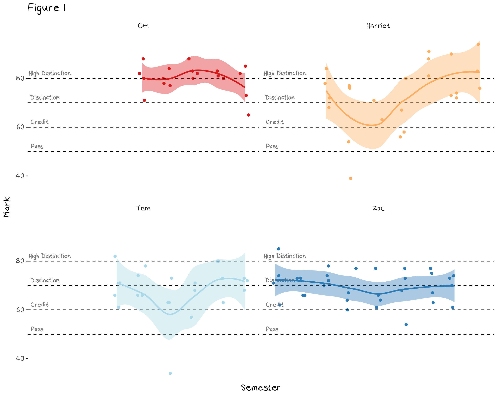
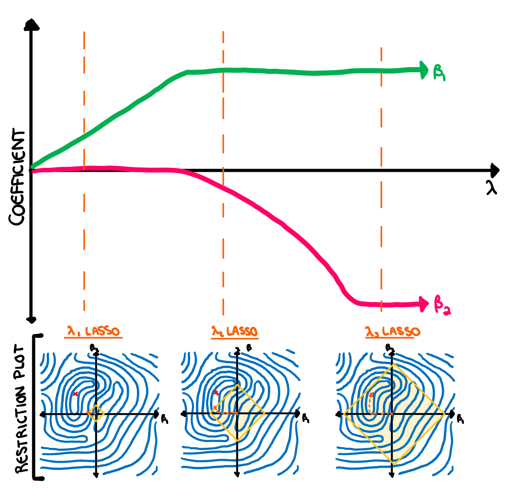
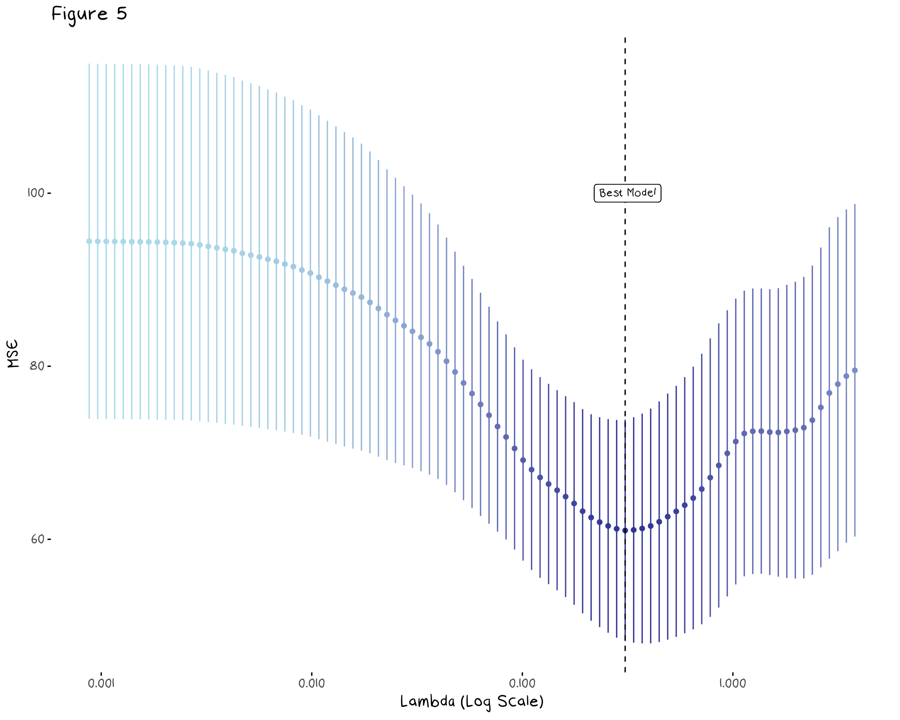
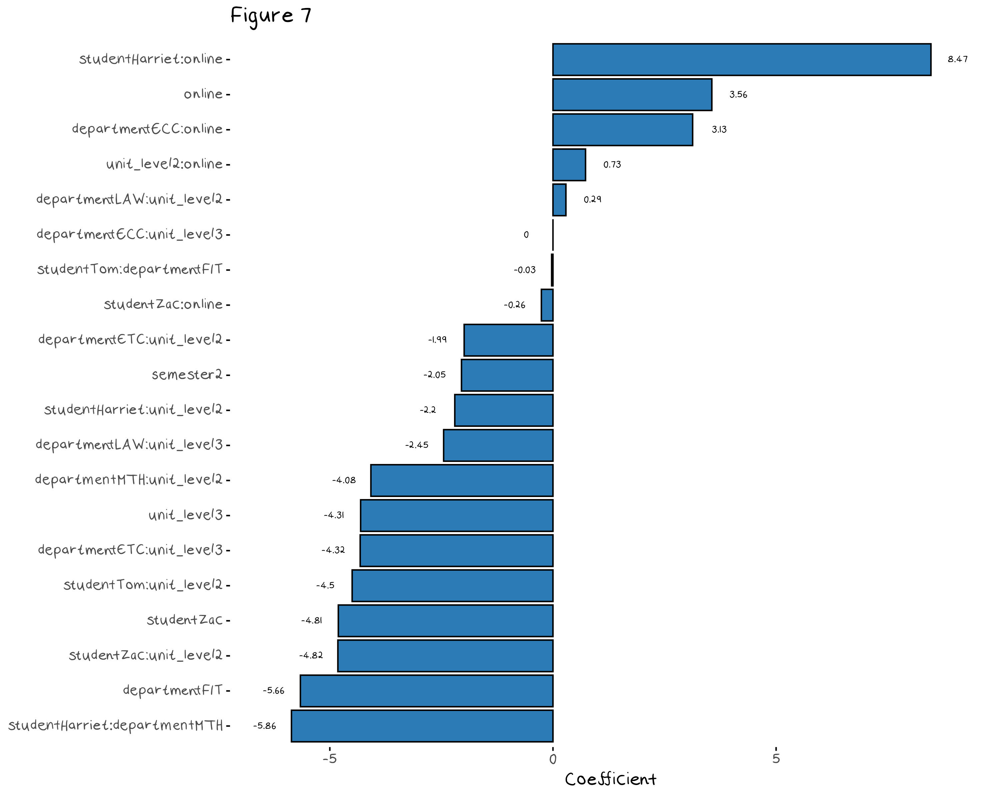

Trying to Save My Housements (Specifically Tom) from Alcohol Poisoning with Regularisation
The drinking game that killed Tom
Back when I lived with my sister I barely managed to drink once a month, and health wise, I was living a good life. Unfortunately, my sister decided to get engaged and her fiance was all “its weird that we live with your hermit sister” and “you two have been co-dependent for years its unhealthy and it’s time to stop”. When I moved in with my friends at the beginning of the year I was immediately tossed in to a long strict lock down. I had to deal with living in a house of people I liked, all of which had no schedule and were all bored out of their minds, so, to cut a long story short, we all started drinking a lot. I have since significantly cut back (I have gone back to my original “barely once a month” amount), but during our trial period for high functioning alcoholism, our friend Fynn introduced us to a “guess your uni grades” drinking game. Here is how it works:
- Guess your mark for all the units you are taking this semester
- When you get your results, calculate the difference between your guess and your actual result. e.g. if you guess 51 for Topology and actually get a 73 because the exam was scaled, you get 22 points.
- Take your points for each unit and sum them up. e.g. If topology got you 22 points, data structures 7 points, and a project unit was 3 points, your total is 32 points.
- If you did not do a 4 unit work load, you scale your points up and round to the nearest integer to match that. e.g. if you had 32 points and did 3 units, your scaled score is 43.
- The number of points you have is the number of drinks you have to do.
Fynn’s version is proper shots. Unfortunately because the example case was based on my housemate Tom, who apparently has next to no idea how he is doing in his courses, we had to change our rules to shots of mixed drinks. Even with this change we calculated that there was still a chance Tom would be killed by alcohol poisoning. After a 3-1 house vote we agreed we were willing to make that sacrifice for the sanctity of the game. My housemates in order of least to most points were:
- Zac with 4 drinks
- Me with 13 drinks
- Em with 17 drinks
- Tom with 43 drinks

This game led into a discussion about whose grades are the most difficult to predict. For example, there are things that seem to make guessing easier, such as completely in semester units. While things like my and Tom’s history of high variance puts us at a natural disadvantage. The first step to understanding what affects our changes in grades is to predict them. Figure 1 below gives a basic visualization of the house’s grades. The x axis represents the year and semester, however it is mostly arbitrary.

Looking at this plot we can visually see some of our personality quirks in the data. This plot makes it rather obvious which semester I had a mental breakdown and was diagnosed with ADHD. Em’s consistently high marks show the benefit of grade based anxiety, and the slight drop at the end shows the trade off that occurs when you start looking after your mental health. Zac’s grades all sit around the same range, because despite being a reliably high achiever, he over commits to extra-curricula and often hands assignments in several days late, which essentially stops him from getting higher than an 80. Tom has no reason for being the way he is.
We want to try and improve our predictions by building a model that forecasts next semesters results. Fynn’s house had a total of 69 drinks, while we had 77 and losing to another household (especially one as inferior as Fynn’s) is a blight on our competitive record. The problem with building a model is that there is very little data here, especially when compared to the number of variables at hand. This means even something as simple as a linear regression will have too much flexibility and will likely over fit, so to fix this, we need to turn to regularisation.
What is regularisation?
Regularisation is essentially a systematic way to reduce the variance and increase the bias of a model and improve the overall error through the bias variance trade off. There are quite a few regularisation methods, but I’m not going to go through all of them here. Rather I have summarised three of the more common techniques below.
Subset selection: This technique selects a subset of the predictors to use in the regression. There are three common types of subset selection: forward subset selection, backward subset selection, and best subset selection. Forward subset selection starts with the null model and, at each step, adds the variable that reduces the test error the most, until the model is at a point where the addition of new variables don’t improve the the test error. Backward subset selection does the same but in reverse, it starts with the model containing all the variables and removes predictors until the test error does not improve. Best subset selection makes every possible model (the power set of the predictors) and chooses the one with the minimum error, however this can also over fit and is often computationally infeasible.
PCA regression: You may remember principal component analysis (PCA) from one of my previous posts as an unsupervised learning method, but it can also be used as a regularisation technique. Using the principal components (which are just linear transformations of the original predictors) as predictors in an OLS regression can reduce the variance of the model.
Shrinkage methods: these methods make a new error function that is the sum of the residual sum of squares (RSS) and a penalty term and selects coefficients by minimising this new error function. The two main methods are lasso, which minimises the function RSS + \lambda\sum_{j=1}^{p}|\beta_j|, and ridge which minimises the function RSS + \lambda\sum_{j=1}^{p}\beta_j^2, where \lambda is a tuning parameter. These additional penalties force the coefficient estimates to be closer to 0.
The method used in the example, and the main focus of the rest of this post, will be the shrinkage methods, as they have the most interesting theory and haven’t been explained previously on the blog. Now that we have seen how we perform regularisation, this still leaves the question why it works. There are two main benefits to regularisation, lower error and better model interpretability. I will explain how each of them work below.
The first reason to use regularisation is to reduce the variance of our model. Often, we do this implicitly by choosing a simple model due to a lack of data. For example, if we had built a neural network and found that the model had too much variance, we could instead build a random forest as a less flexible alternative. Regularisation is used when our model is already as simple as it can be, e.g. a linear regression or LDA in the case of classification, and it still has too much variance. We can’t get more data, and to remove a level of flexibility from a linear regression would be to predict the average (a constant). Regularization allows us to reduce this error from variance by further restricting the model parameters and thus allowing a model that is even more inflexible than a normal least squares linear regression.
The second reason to use regularisation is to improve the interpretability of the model. A large number of unnecessary variables not only introduces error, but also complicate the model. The benefit of using regularisation to improve model interpretability stems from the idea that there are signal and noise variables and we want to keep the signal variables while removing the noise variables. Regularisation removes predictors that have a spurious relationship to the response variable and leave us with less coefficients to interpret.
Example: Do the grades need a regularised model?
Technically we don’t need a reason to run a regularised model, it is just another method we can use to balance the bias and variance trade off, but in cases where there is a very small amount of data it is more useful to do than not. In this example we want to predict the grade of each unit in the up coming semester using several factors, such as student, department, whether the unit was in semester 1 or 2 (I suspect we do worse in semester 2 due to burn out), the level of the unit (most of us should do better in first year units), whether the unit was online, etc. There are also several interaction terms that could be useful, for example an interaction term between the Harriet student dummy and the online semesters would capture the later jump in my grades. There are obviously more interesting (and useful) variables we could include, such as whether we needed to move house during semester, if we went on a holidays during midsemester break, if we were seeing a therapist, etc. These variables would likely produce a better prediction and more easily interpreted coefficients, however I’m going to keep the model simple and leave it as is. Once we have our data set we can immediately see two reasons to use a regularised model over a normal OLS.
First of all, the matrix is full rank, that is, we have variables that are a linear combination of other variables in the data set. For example, Tom and I are the only two students who take maths units (MTH), so with the student other department variables, the MTH variable becomes obsolete. There are several other variables with this issue. I’m not sure which variables are better to keep (department or student) and this issue will likely get worse as I add interaction terms.
Second of all, with such a small data set, any model with more than a handful of predictors will have a large amount of variance. Figure 2, below, shows the test and training error of a simple linear model that’s flexibility has been increased (somewhat arbitrarily) with the addition of new predictors. In this plot, a 0 in flexibility indicates a model that predicts the mean, while an 8 indicates a model that contains all the predictors in the data set as well as every every interaction term. This plot only shows the change in mean squared error (MSE) over a single sample of the data. To see the MSE of the model over several samples (and properly assess the variance of each model) we should do some resampling.

Figure 3 shows the density of the test and training error of 50 samples of:
a basic linear model which predicts the mean of the training set for all test observations
a simple linear model which is an OLS model with only a handful of predictors I selected
a complex linear model which is an OLS model with every predictor and their interaction terms.
This gives us a cross validated version of Figure 2, and confirms what the previous plot indicated. First of all, it shows, a basic model has slightly too much bias because the training and test error are, on average, higher than the error of the simple model. It also shows that the complex model has over fit the data, given its consistently low training error and high unpredictable test error. We need a model that is somewhere between the complex “every variable” model and a constant. To find this model, we will use regularisation, specifically a shrinkage method.

Shrinkage Methods
The most common regularisation methods are ridge and lasso regressions. Lasso and Ridge follow the same general idea, which is to put additional restrictions on the coefficients of a linear regression, they only slightly differ on how they go about it. Lasso, will minimise RSS + \lambda\sum_{j=1}^{p}|\beta_j|, and ridge will minimiser RSS + \lambda\sum_{j=1}^{p}\beta_j^2. The turning parameter \lambda decides how much the penalty term influences the final coefficient values. A large value of \lambda means the penalty term outweighs the RSS and coefficients are estimated at 0, a small value of \lambda means the penalty will not be factored in at all and the model will return the OLS coefficient estimates. Figure 4 shows a contour plot of the lasso penalty, RSS function, and lasso error term for a two variable model. The animation shows the contours of the lasso regression look more like the contour plot of the penalty term as \lambda increases. In turn we can see the minimum value of the error function (and thus the estimated coefficients) moves from the OLS estimates (the minimum of the RSS) to 0 (the minimum of the penalty).


What may not be clear from this animation, but does simplify our ability to visualise how this adjusted error works, is that for every value of \lambda there is some value of s such that we are minimising the RSS subject to the constraint \sum_{j=1}^{p}|\beta_j| \leq s in the case of lasso and \sum_{j=1}^{p}\beta_j^2 \leq s in the case of ridge. This means that instead of trying to think about a complicated constantly changing error function, we picture our restraints as shown in the illustration below. Here I have drawn a contour plot of a hypothetical RSS for a two variable model. The plot on the left has the ridge regression constraints drawn over it, while the plot on the right has the lasso constraint. The size of the circle/diamond is related to the tuning parameter \lambda. When \lambda=0 the area of the circle/diamond is infinite, and when \lambda \rightarrow \infty the circle/diamond becomes so constrained it forces every coefficient to 0. This allows us to see how the constraint impacts the selected coefficient estimates.

Something that is important to note is that lasso regression is more likely to set coefficients to 0 (and thus more likely perform feature selection) than ridge due to the diamond shape of the constraint. The minimum RSS value in figure 4 showed this in practice, as the minimum coefficient estimate quickly set \beta_1 to 0 before further restricting \beta_2. Most commonly we will visualise the way the coefficients change as \lambda increases with a plot of the coefficient vs \lambda values, as drawn below.

There is one final question we need to answer before we move on. How do we decide whether to use ridge or lasso regression? Well, if you think all the variables are relevant, use ridge regression, if you suspect some variables to just be noise, use lasso. Now, with an understanding of how shrinkage methods work, we can go back to our example.
Predicting the Grade
Lets apply this theory to our grades model to see if we can improve our predictions. Some of the variables are linear combinations of others, so there is absolutely no need to keep all the predictors. This means we should opt for lasso over ridge regression, although this does have one downfall. This example has a large number of interaction terms, and when we include interaction terms, we typically need to maintain a hierarchy so our variables are interpretable, e.g. we need to keep the Harriet and the Online dummy variables in the model if we want to include the Harriet:Online interaction term. Ridge and lasso regression do not follow this hierarchy when they shrink variables. Usually this would make predictability worse, however since every single predictor in this data set is a dummy variable, it isn’t going to cause (too) much of an issue. The main problem will be having almost no idea what the base line model is. From this point forward we will mostly focus on the improvements in test error, and continue with the lasso regression.
To find our lasso model, we need a \lambda value. The best way to find this value is with cross validation, and thankfully the glmnet package does this for us. Figure 5, below, shows the mean test MSE and 95% confidence interval of the lasso regression for several values of \lambda. The vertical dotted line indicates the \lambda value that minimises the model error.

We can also visualise how our coefficients change as \lambda increases. Figure 6 shows the change in the model coefficients as we allow \lambda to approach 0 (or our L1 Norm to get infinitely large as shown on the x axis). The dashed line indicates the model associated with the \lambda value found from cross validation. This allows us to better understand how some coefficients interact with each other. For example the Harriet:online interaction is the largest coefficient in every model, regardless of the \lambda value, which indicates it is a consistently useful variable.

The model that contains every variables as well as every student, unit level, department and online interaction term has 54 variables, the regularised model has only 20 variables, so there has been some serious culling. Figure 7 shows the predictors that made it into the final model. Since the baseline model (the one that we compare each dummy variable to) is now a mess, these coefficients are almost impossible to interpret.

Finally, we can compare the lasso model to the basic, simple, and complex models from figure 3. Figure 8 compares the cross validated RMSE of the three old models and the new lasso model. We can see that the simple model (that was just the student and online variables as well as all their interaction terms) may slightly outperform the lasso model, however there is so much overlap in the confidence intervals it is hard to say. In this example, the lasso model did not select variables that were better than my general intuition. Lasso can help you regularise to some degree, but even regularisation techniques can be given too many predictors to choose from, and it seems my intuition was enough to beat it this time.

Conclusion
Regularisation can be used to reduce the variance and improve the interpretability of our model, but human intuition can still outperform it if we know enough about our data. That being said the models for our grade predictions turned out to be useless. Results for this semester have been released and Tom was 32 off, while the simple model was 55 off. Really, the lesson here is that no model, no matter how fine tuned, can predict a response variable that has an inexplicably high variance.